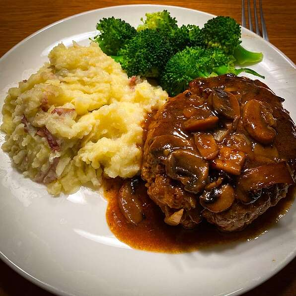

Salisbury Steak Recipe

This was made famous by Chef John!
Description
Steak portion
- 1 pound 85% lean ground beef
- ½ teaspoon freshly ground black pepper
- 1 teaspoon dry mustard
- 2 tablespoons ketchup
- 1 tablespoon Worcestershire sauce
- 1 teaspoon soy sauce
- 1 large egg, beaten
- 1 pinch cayenne pepper, or to taste
- ½ cup plain bread crumbs
Gravy portion
- 2 tablespoons salted butter
- 12 large white button mushrooms, sliced
- 1 cup diced onion
- 1 pinch salt
- 2 tablespoons all-purpose flour
- 2 tablespoons ketchup
- 1 tablespoon Worcestershire sauce
- 3 cups high-quality, low-sodium beef broth
- salt to taste
- 2 tablespoons salted butter